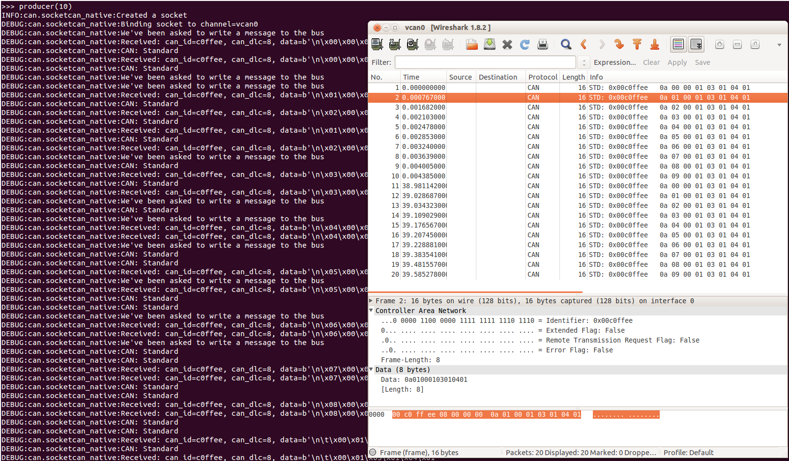

SocketCAN¶
The full documentation for socketcan can be found in the kernel docs at networking/can.txt.
Note
Versions before 2.2 had two different implementations named
socketcan_ctypes and socketcan_native. These are now
deprecated and the aliases to socketcan will be removed in
version 4.0. 3.x releases raise a DeprecationWarning.
Socketcan Quickstart¶
The CAN network driver provides a generic
interface to setup, configure and monitor CAN devices. To configure
bit-timing parameters use the program ip.
The virtual CAN driver (vcan)¶
The virtual CAN interfaces allow the transmission and reception of CAN frames without real CAN controller hardware. Virtual CAN network devices are usually named ‘vcanX’, like vcan0 vcan1 vcan2.
To create a virtual can interface using socketcan run the following:
sudo modprobe vcan
# Create a vcan network interface with a specific name
sudo ip link add dev vcan0 type vcan
sudo ip link set vcan0 up
Real Device¶
vcan should be substituted for can and vcan0 should be
substituted for can0 if you are using real hardware. Setting the
bitrate can also be done at the same time, for example to enable an
existing can0 interface with a bitrate of 1MB:
sudo ip link set can0 up type can bitrate 1000000
PCAN¶
Kernels >= 3.4 supports the PCAN adapters natively via SocketCAN, so there is no need to install any drivers. The CAN interface can be brought like so:
sudo modprobe peak_usb
sudo modprobe peak_pci
sudo ip link set can0 up type can bitrate 500000
Send Test Message¶
The can-utils library for linux includes a script cansend which is useful to send known payloads. For example to send a message on vcan0:
cansend vcan0 123#DEADBEEF
CAN Errors¶
A device may enter the “bus-off” state if too many errors occurred on the CAN bus. Then no more messages are received or sent. An automatic bus-off recovery can be enabled by setting the “restart-ms” to a non-zero value, e.g.:
sudo ip link set canX type can restart-ms 100
Alternatively, the application may realize the “bus-off” condition by monitoring CAN error frames and do a restart when appropriate with the command:
ip link set canX type can restart
Note that a restart will also create a CAN error frame.
List network interfaces¶
To reveal the newly created can0 or a vcan0 interface:
ifconfig
Display CAN statistics¶
ip -details -statistics link show vcan0
Network Interface Removal¶
To remove the network interface:
sudo ip link del vcan0
Wireshark¶
Wireshark supports socketcan and can be used to debug python-can messages. Fire it up and watch your new interface.
To spam a bus:
import time
import can
bustype = 'socketcan'
channel = 'vcan0'
def producer(id):
""":param id: Spam the bus with messages including the data id."""
bus = can.interface.Bus(channel=channel, bustype=bustype)
for i in range(10):
msg = can.Message(arbitration_id=0xc0ffee, data=[id, i, 0, 1, 3, 1, 4, 1], is_extended_id=False)
bus.send(msg)
time.sleep(1)
producer(10)
With debugging turned right up this looks something like this:
{kind=link}
The process to follow bus traffic is even easier:
for message in Bus(can_interface):
print(message)
Reading and Timeouts¶
Reading a single CAN message off of the bus is simple with the bus.recv()
function:
import can
can_interface = 'vcan0'
bus = can.interface.Bus(can_interface, bustype='socketcan')
message = bus.recv()
By default, this performs a blocking read, which means bus.recv() won’t
return until a CAN message shows up on the socket. You can optionally perform a
blocking read with a timeout like this:
message = bus.recv(1.0) # Timeout in seconds.
if message is None:
print('Timeout occurred, no message.')
If you set the timeout to 0.0, the read will be executed as non-blocking,
which means bus.recv(0.0) will return immediately, either with a Message
object or None, depending on whether data was available on the socket.
Filtering¶
The implementation features efficient filtering of can_id’s. That filtering occurs in the kernel and is much much more efficient than filtering messages in Python.
Broadcast Manager¶
The socketcan interface implements thin wrappers to the linux broadcast manager
socket api. This allows the cyclic transmission of CAN messages at given intervals.
The overhead for periodic message sending is extremely low as all the heavy lifting occurs
within the linux kernel.
send_periodic()¶
An example that uses the send_periodic is included in python-can/examples/cyclic.py
The object returned can be used to halt, alter or cancel the periodic message task.
- class can.interfaces.socketcan.CyclicSendTask(bcm_socket, message, period, duration=None)[source]¶
A socketcan cyclic send task supports:
setting of a task duration
modifying the data
stopping then subsequent restarting of the task
- Parameters:
bcm_socket – An open bcm socket on the desired CAN channel.
message (can.Message) – The message to be sent periodically.
period (float) – The rate in seconds at which to send the message.
duration (float) – Approximate duration in seconds to send the message.
Bus¶
- class can.interfaces.socketcan.SocketcanBus(channel='', receive_own_messages=False, fd=False, **kwargs)[source]¶
Implements
can.BusABC._detect_available_configs().- Parameters:
channel (str) – The can interface name with which to create this bus. An example channel would be ‘vcan0’ or ‘can0’. An empty string ‘’ will receive messages from all channels. In that case any sent messages must be explicitly addressed to a channel using
can.Message.channel.receive_own_messages (bool) – If transmitted messages should also be received by this bus.
fd (bool) – If CAN-FD frames should be supported.
can_filters (list) – See
can.BusABC.set_filters().
- recv(timeout=None)¶
Block waiting for a message from the Bus.
- Parameters:
timeout (float) – seconds to wait for a message or None to wait indefinitely
- Return type:
can.Message or None
- Returns:
None on timeout or a
can.Messageobject.- Raises:
can.CanError – if an error occurred while reading